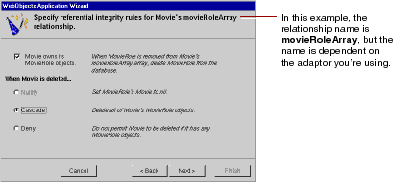
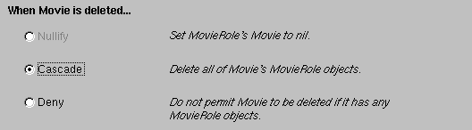

Table of Contents
Table of Contents  Next Section
Table of Contents
Next Section
Table of Contents  Previous Section
Previous Section

If foreign key definitions aren't specified in your database server's schema information (as with Microsoft Access), the wizard hasn't created any relationships at all, and it skips this step. You'll add relationships to your model using EOModeler later in this tutorial.
In the first relationship configuration page, the wizard asks you about Movie's relationship to MovieRole. The name of the relationship is dependent on the adaptor you're using.
This option specifies that a MovieRole can't exist without its Movie. Consequently, when a MovieRole is removed from its Movie's array of MovieRoles, the MovieRole is deleted-deleted in memory and deleted in the database.

This option specifies what to do when the source object (the Movie) is deleted. The cascade delete rule specifies that when a source object is deleted, the source's destination objects should also be deleted-again, deleted in memory and correspondingly in the database.
Now the wizard asks you about Talent's relationship to MovieRole.
The deny delete rule specifies that if the relationship source (a Talent) has any destination objects (MovieRoles), then the source object can't be deleted.
Table of Contents Next Section